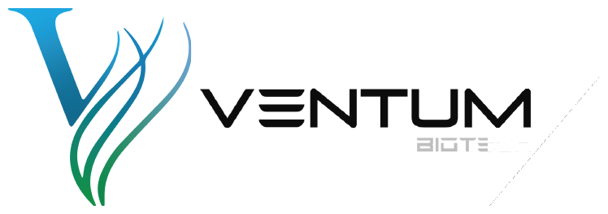

Ventum Biotech
Ventum Biotech es una empresa independiente — no es una plataforma propiedad de IEC. El fundador de IEC se desempeña como su Director de Alianzas Estratégicas Globales y Desarrollo de Negocios Internacionales, liderando un entorno de crecimiento estratégico y comercialización de seis meses.

Ventum Biotech Socio estratégico
Tecnología de biodescontaminación (Ventum One-Touch) — IEC lidera su entorno de crecimiento estratégico y comercialización.
Visitar Ventum ↗Entorno de crecimiento y comercialización
Crecimiento estratégico
Posicionamiento en el mercado, desarrollo de alianzas y dirección de salida al mercado para la plataforma de biodescontaminación de Ventum.
Comercialización
Construcción del motor comercial — canales, alianzas y desarrollo de negocios internacionales.
Entorno de seis meses
Un proyecto enfocado y con plazo definido, liderado personalmente por el fundador de IEC como Director de Alianzas Estratégicas Globales y Desarrollo de Negocios Internacionales.